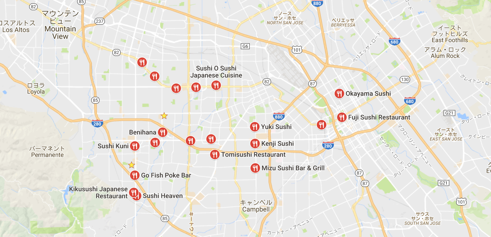

What is Sushi?
Sushi (すし, 寿司, 鮨) is the Japanese preparation and serving of specially prepared vinegared rice (鮨飯 sushi-meshi)
combined with varied ingredients (ネタ neta) such as chiefly seafood (often uncooked), vegetables,
and occasionally tropical fruits. Styles of sushi and its presentation vary widely,
but the key ingredient in all cases is the sushi rice, also referred to as shari (しゃり), or sumeshi (酢飯).
How to order?
To eat sushi, you must experience very intimidating process. So, I'd like to explain how to order it.
Step 1 - Choosing a Restaurant
Perhaps you have been invited to a Japanese restaurant for the first time, or perhaps you just want a new experience. Either way, the first step to trying sushi for the first time is finding someone to go with you. You should go with someone who knows a bit about sushi, since you don't want to worry about ordering or where to go. If you don't know anyone, just try to visit a moderately priced restaurant. Cheap sushi can have an overly fishy taste and bad texture. Make sure to ask questions, as the waitstaff at a nice Japanese restaurant will bend over backward to make sure you have a pleasant experience.

Step 2 - Sushi Etiquette
As a first time sushi eater, make sure you are familiar with the etiquette. Most western sushi bars, are not expecting much for the typical sushi goer, but learning a little about the culture and what is expected will make the experience more enjoyable.
For example, Never pass food to someone using chopsticks. This act parallels passing cremated bones of a deceased relative at a Japanese funeral. If you must share food, pass them the plate so that they can pick from it instead.
Step 3 - What to Order
Newbi sushi eaters generally start with maki, which is thin slices of fish and rice wrapped in seaweed. You should start out sharing a single roll, which comes with about six pieces, with a friend. The most popular maki in the United States is the California roll, which has a very rich taste and little or no raw fish. The Cucumber roll is very good as well, but also contains no fish. If you are willing to be adventurous, you should start with a Tuna roll, which is simply raw tuna, sushi rice, and seaweed. The taste of the seaweed and bittersweet taste of the rice will mostly overpower the tuna. Once you have tried maki, however, you should graduate to nigiri to have the true sushi experience.
Step 4 - What the Waiter Brings You
You may be given miso soup to start. If you've never tried it, it is likely that will not taste like anything you've had before. However, some people associate the taste of miso with the salty taste of home-canned green beans. Miso soup is strong, very salty, and slightly fishy. It should be stirred with your chopsticks and then drunk directly out of the bowl. However, most restaurants will provide you a spoon since most westerners feel drinking the soup out of the bowl is bad manners. Careful, it will be very hot. The ingredients of miso soup are pretty complex. The most unusual ingredient is in the broth, which contains some fish skin.
Step 5 - Tips on eating nigiri
Right before you eat nigiri (slabs of raw fish on rice), be prepared for what it will taste like. You should expect a fishy taste and a fleshy texture. Don't pretend you're eating something else, because that will ruin the experience and may cause you to gag.
What are the ways that grocery store sushi is different from serious sushi?
The diffirences appear especially on Fish and Rice. You shold choose which sushi you will eat, referencing this article.
Rice
The rice is likely cooked with too much water, leading to an initial texture more akin to baby food. But after a few hours in a cold case, that roll will be dry as a bone. Moreover, Sushi rice should be served close to body temperature and kept slightly warm until being served. That's not happening in a grocery store.
Fish
Once a sushi chef's hands have cut and formed the fish over rice, the fish has been slightly warmed. Those few moments of handling greatly increase the flavor, a personal touch that your grocery case cannot provide.
Most fish used in sushi these days is frozen at some point between the ocean and your mouth, but the technology varies widely. A well-frozen fish is dipped in liquid nitrogen and hits negative 65 degrees instantly, leaving the flesh and muscles perfectly intact. However, cheaper methods of freezing will lead to water crystallization that is going to degrade the overall flavor. The flip side of this is that when high end restaurants do get fresh, never-frozen fish, there is a greater chance that the fish will be carrying parasites. So in theory, grocery store sushi could actually be considered less of a health hazard.